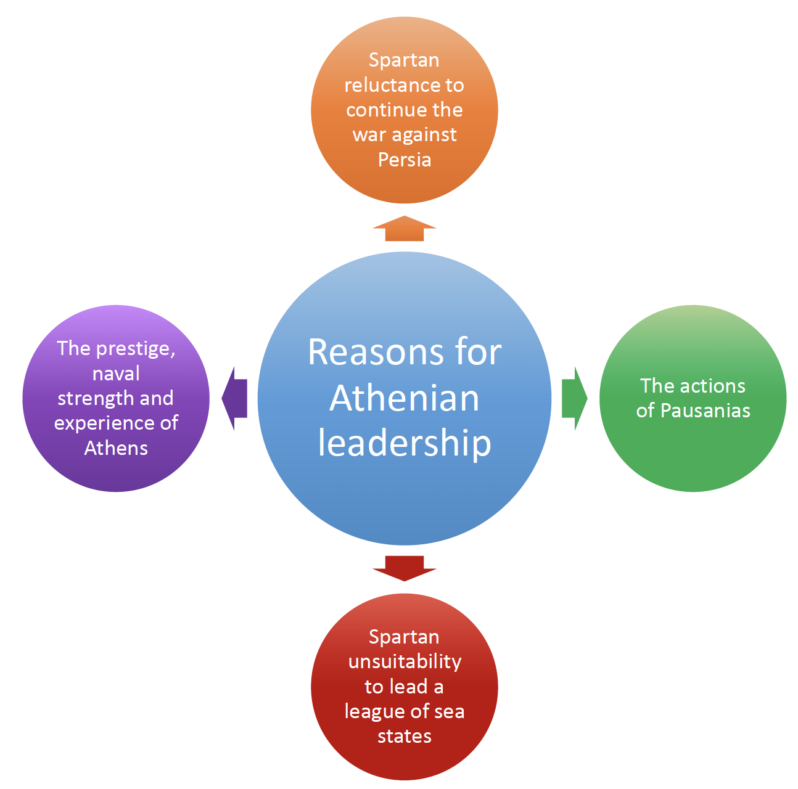

The Delian League
The Origins of The Delian League

'Athens and her allies' — the formation of the Delian League
Although Sparta had successfully led the Greek forces to victory against the Persians in 480–479 BC, it was Athens who emerged as the greatest power in Greece in the next decade.
Athens became the leader or hegemon of a league of naval states called 'The Athenians and their Allies'. A modern term used by historians for this organisation is the 'Delian League' or 'Confederacy of Delos'.
The members of the Delian League continued the war against Persia in the Aegean Sea and along the coasts of Asia Minor.
Spartan Reluctance to Continue the War Against Persia
After the battle of Mycale, the Greek fleet returned to Samos to hold a council of war. Leotychidas, the Spartan leader of the Greek forces, was faced with a problem.
The Ionian Greeks were deserting the Persians and wanted to join the Spartans' alliance as they couldn't maintain their independence from Persia on their own. They would need continuous help from mainland Greece.
However, the Spartan and Peloponnesian contingents did not want to spend any more time in the eastern Aegean so far from home. The Spartan commander suggested the Ionians leave their homeland and settle in those states of mainland Greece that had medised (gone over to Persia in the previous war). The Ionians were shocked at this suggestion and the Athenians supported them in their refusal.
We did not gain this empire by force. It came to us at a time when you were unwilling to fight on to the end against the Persians.
The Spartans reluctantly accepted the Ionians into their alliance of city-states and agreed to sail to the Hellespont to break the bridges of the Persians. When they found the bridges already gone, Leotychidas and the Peloponnesians sailed home.
The Athenians, under the command of Xanthippus, remained in the area to get rid of the Persians from the strategic town of Sestos.

The Actions of Pausanias
In 478 BC the Spartan government put Pausanias in charge of a Greek fleet to free those states still under Persian control. He freed Byzantium at the entrance to the Black Sea but while there began to behave badly towards the Eastern Greek allies.
“He scattered insults far and wide with his officiousness and absurd pretensions.”
Plutarch, Aristides 17
Pausanias' behaviour caused such resentment amongst the Ionians that they asked Athens to take over control. Pausanias was recalled by his own government and replaced by another commanding officer whom the Ionians also rejected. Spartan leadership was no longer acceptable.
Spartan Unsuitability to Lead a League of Sea States
There were many Spartans who were content to give up the leadership in the continuing conflict with the Persians in the east. Why was this the case?
- They had domestic problems to deal with. There was always the fear that the helots would revolt if the Spartan army spent too much time outside the Peloponnese.
- Sparta also needed to consolidate her position within the Peloponnese where she had powerful enemies such as Argos.
- They were afraid of being disgraced again by high-ranking Spartan officers sent abroad.
- They were a military, land-based, rather than a naval, power.
Athens — The Obvious Choice
The Spartan system also created people with a narrow and rigid attitude. They tended to be isolationist and inward looking, hardly a suitable outlook for the leader of a widespread organisation.
The Athenians, who were of Ionian descent, were held in high regard after Salamis and had a large and experienced navy which was essential for leadership of any league of coastal and naval states. They were in a much stronger position now than they had been when they first sent aid to the Ionians during the Ionian Revolt in 499 BC. They were the obvious choice to take up the hegemony (leadership) of the island and coastal states of the Aegean region.
So, Athens took over the leadership, and the allies, because of their dislike of Pausanias, were happy about this.

Original Membership
Although the number of original members is not known, the area covered by the league in the first year is believed to have extended from Byzantium (north-east) to Aineia (north-west) and from Rhodes (south-east) to Siphnos (south-west).
Aims of the Delian League
Thucydides mentions that one of the objectives of the league was to 'free the Greeks from the Persians'. This referred to those Greek states in the northern Aegean and Asia Minor which were still under Persian control. Associated with this was the need to protect those towns and cities which had revolted from Persia and those which were to be freed in the near future.
Thucydides mentions another objective — to avenge what the Hellenes had suffered by ravaging (destroying) the 'territory of the King of Persia'.
It is worth considering whether their policy of attacking Persian territory by means of the Delian League was intended in part to prevent a recurrence of the great invasion. Persia had, of course, been heavily defeated in 480–479 but she had retained most of her empire, including Egypt, the greater part of Asia Minor, and, indeed, most of the Middle East. A repeated invasion might seem to outsiders, such as Athens and her naval allies, to be a political necessity for the Persians, if they were to prevent discontented subjects in their more remote provinces from drawing subversive conclusions about Persian weaknesses.
An Athenian Agenda?
The three objectives (to free, to protect, to destroy) involved the League members in both offensive (attacking) and defensive (defending) actions.
When Thucydides explained that one of the allies' intentions was to ravage the territory of the King of Persia, he used the word 'proskhema'. This has been translated in a number of ways by recognised historians:
- ‘professed purpose’ — R. Meiggs
- ‘announced intention’ — Gomme
- ‘pretext’ — GEM de Ste Croix
I fancy that his [Thucydides'] choice of the word [proskhema] would have left them [his readers] with the feeling that the talk of revenge through ravaging expeditions was at least partly a cover for ambitious Athenian designs for organising a large, active, powerful and rich alliance under their control.
Certainly, the Athenians and others had suffered severe material loss from the two Persian occupations of 480 and 479, and the prospect of booty from such a wealthy empire as Persia was undoubtedly attractive.
However, such an aim would have been very limited and short-term for a permanent league — at some point in the not too distant future the Greeks would have gained the appropriate compensation. This stated aim was probably a very convenient one, upon which all the members could agree, although harbouring different ideas as to what they wanted from the League. The allies, especially the cities on the Asiatic mainland and the neighbouring islands, fresh from deliverance from Persian domination, wanted continued freedom.
In Thucydides' account, Hermokrates of Syracuse states that Athens became leader of willing allies in eastern Greece 'as being a state which intended to punish the Persians.' (Thucydides 1.96.1)
The allies' freedom from and independence of such a powerful empire as Persia required the existence of a permanent, military league to ensure the maintenance of these objectives. The Athenians for their part, while accepting that the success of the League in creating an effective buffer zone between themselves and Persia would guarantee their liberty, also saw that they would confirm and increase their status as one of the two super-powers in Greece by being the hegemon of a strong naval league.
The example of the Spartans' dominant influence in Greek affairs due to their leadership of the powerful Peloponnesian League was a great incentive to the Athenians to create something similar, in which they could invest their newly acquired military strength and prestige.